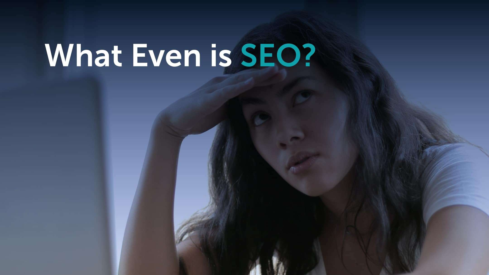

Web Tech
What Even is SEO?

Understanding Websites and SEO
When you’re building a website, the first thing you need is hosting. Think of hosting as renting a plot of land to build your website on. Just like in the real world, you need a place to put your building. Your domain, on the other hand, is like the address to your website. It’s what people type in to find you, like “www.mywebsite.com.”
Building Your Website: The Empty Lot
Imagine you’ve just rented your plot of land and you have your address. But there’s a problem: your plot of land is in the middle of nowhere, and there are no roads leading to it. If someone wants to get to your website, they need to know exactly where it is and fly there directly. Not very convenient, right?
The Role of SEO: Building Roads
This is where SEO, or Search Engine Optimization, comes in. SEO is like building roads to your website. Just like building actual roads, creating pathways to your website takes time and effort. You want to make it easy for people to find your site, just like you want to make it easy for people to find your house.
How SEO Works
- Keywords: Think of keywords as signposts on your roads. They tell search engines what your website is about so they can direct people to you. These are the words and phrases people use when they’re looking for something online.
- Links: Links are like bridges connecting different roads. When other websites link to your site, it’s like they’re building a bridge that makes it easier for people to find you.
- Quality Content: Imagine if your roads led to a beautiful park or an exciting amusement park. The content on your website should be interesting and valuable so that people want to visit and stay.
- Fast Loading Speed: No one likes bumpy, slow roads. A website that loads quickly is like a smooth, fast highway. It makes for a better user experience and helps people reach you faster.
- Mobile-Friendly Design: Just like you want roads that can accommodate both cars and bikes, you need a website that works well on both computers and mobile devices. This way, everyone can easily access your site.
Why SEO Matters
When you first build your website, it’s like setting up on an empty lot. SEO helps you create the necessary infrastructure—roads, bridges, and signposts—that make it easy for search engines to find and direct people to your site. Without SEO, your website remains isolated and hard to find, like a hidden plot of land.
Final Thoughts
If this analogy has helped you understand websites a little bit better, you’re on the right track. SEO is all about making your website accessible and easy to find, just like building a network of roads to connect your home to the rest of the world. So, start building those roads and watch as more and more visitors find their way to your digital doorstep!